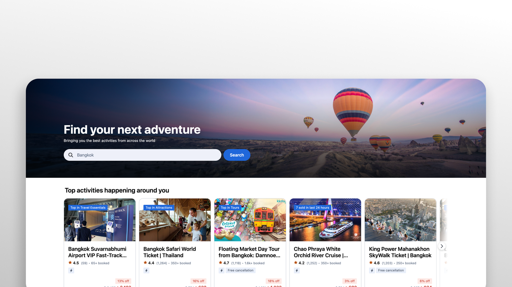
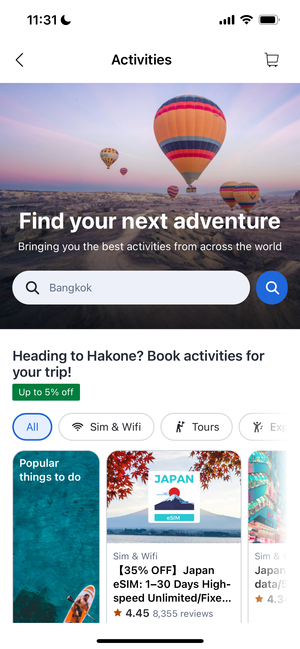
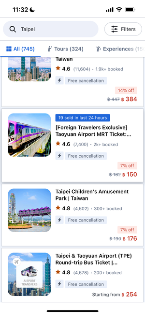
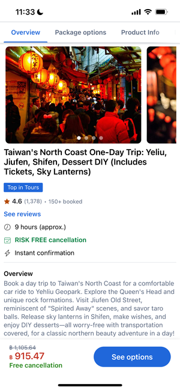
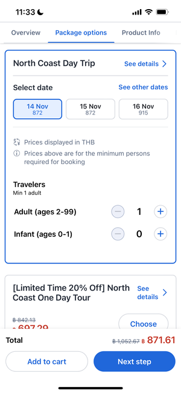

Activities
As Sr. Design Manager for Agoda Activities, I steer end-to-end experience for tours and things to do—from discovery and comparison to confident booking. A full experience revamp is in progress; for now this page documents the legacy baseline. The refreshed flows, motion, and outcomes will be added here once the redesign ships and assets are ready to share.

Context
Travelers often decide on activities late in the trip arc: they skim many options, rely on photos and reviews, and need pricing and logistics to feel transparent before they commit. For Agoda, that means the product must earn trust quickly—especially when inventory and policies differ by supplier.
Before the revamp
The legacy experience had evolved feature-by-feature: browse and detail patterns did not always tell one coherent story, and key moments (what is included, how booking works, what happens next) were not equally clear across surfaces. That set the stage for a revamp focused on narrative, hierarchy, and consistency—not only new visuals. The gallery below shows four screens from the current (pre-redesign) product.
Four representative screens from the legacy experience (PNG).




Approach
While the redesign is in progress, activities design still sits between traveler goals, supplier reality, and platform constraints. My job is to keep the north star visible as the team iterates: clearer merchandising, fewer dead ends, and decisions that hold at scale.
- Quality — E2E activities UX. Align browse, detail, and booking so the story feels continuous—what you see is what you get, through confirmation and post-book expectations.
- Strategy — focus and resourcing. Help prioritize the journeys and surfaces that move trust and conversion, so design capacity matches impact rather than noise.
- Design voice — cross-functional. Partner early with product, content, and ops so policies, edge cases, and edge UI stay in sync—design is not only polish at the end.
- Team. Coach three ICs—one Lead Product Designer and two Sr. Product Designers—toward a shared bar for craft, critique, and outcomes while we ship the revamp.
Redesign in progress
The Activities revamp is still underway: flows, UI, and content are being reworked with engineering and partners. “After” screens, motion, and outcome metrics are not published here yet—this section will be updated when the new experience is live and cleared for the portfolio.
Outcome
Outcomes and numbers stay internal until the redesign ships. For now, the focus is alignment on the target journey, de-risking scope with research and pilots, and keeping design quality bar visible while the team builds toward launch.